Urban Planning · Hong Kong · Greater Bay Area
Turning urban evidence into places, policies, and public value.
我是林圳豪 Hudson，一名把空間分析轉化為策略、設計與可執行決策的城市規劃者。 我的工作橫跨北部都會區策略、公共住房網絡、低排放區評估與社區公共空間更新。
01 · Selected work
Four projects, four ways of making an impact.
精選項目以問題、方法、個人貢獻與成果為核心。點擊案例可查看水印作品預覽。
Urban design · Dubai
Case 01 / Regional resilience
Oasis Renaissance
將 Dubai Creek Harbor 的高密度開發，轉化為由藍綠網絡與公共生活驅動的韌性城區。
- Challenge
- 水文壓力、熱環境與斷裂的濱水公共界面
- Contribution
- 整合區域水系、交通組織、開放空間與街區設計語言
- Methods
- Urban design · Blue-green network · Phasing
Champion · HKHA
Case 02 / Community renewal
Well-being Chak On
以模組家具、活動平台與清晰導向，重新激活屋邨內低使用率的公共空間。
- Contribution
- 主導社區更新方案設計，與香港房屋委員會協作推進落地
- Outcome
- Design competition champion
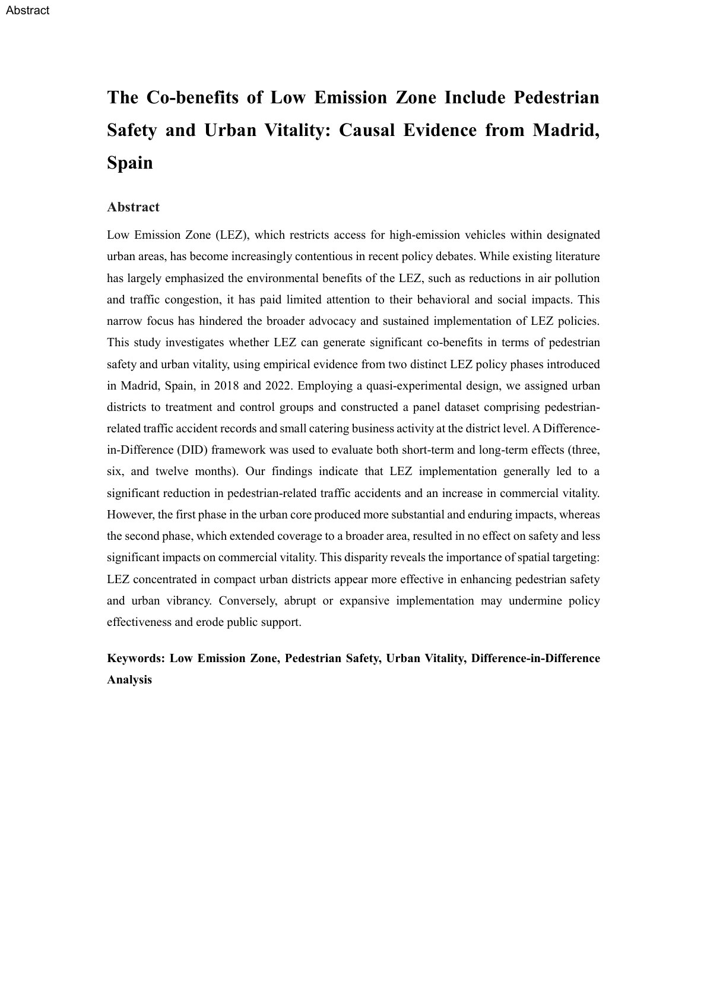
Policy research · MadridCase 03 / Policy evaluation
Madrid LEZ Co-benefits
評估低排放區對行人安全與城市活力的共同效益，讓政策影響變得可驗證。
- Methods
- Difference-in-Difference · Spatial analysis · Policy evaluation
- Outcome
- Manuscript under peer review at Cities
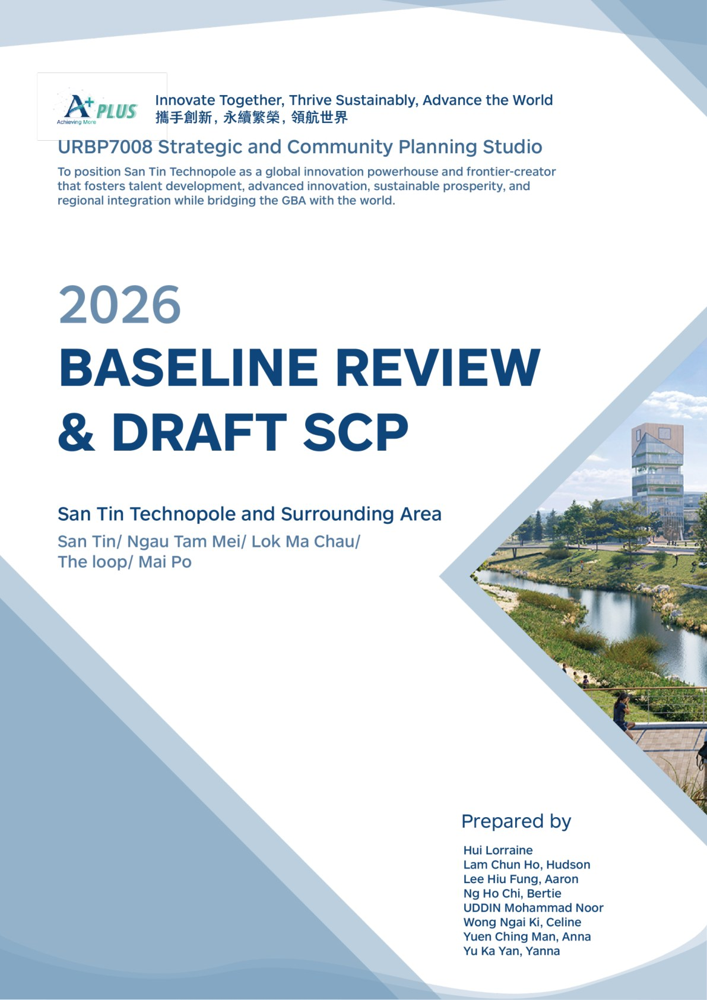
Strategic planning · Hong KongCase 04 / Northern Metropolis
San Tin Technopole Baseline Review
從產業、跨境協同、人才社群與碳中和出發，建立創科新城的策略規劃基礎。
- Scale
- 515-hectare strategic planning study
- Methods
- Baseline review · Spatial strategy · Scenario planning
02 · Profile
Research rigour.
Design sensitivity.
Public purpose.
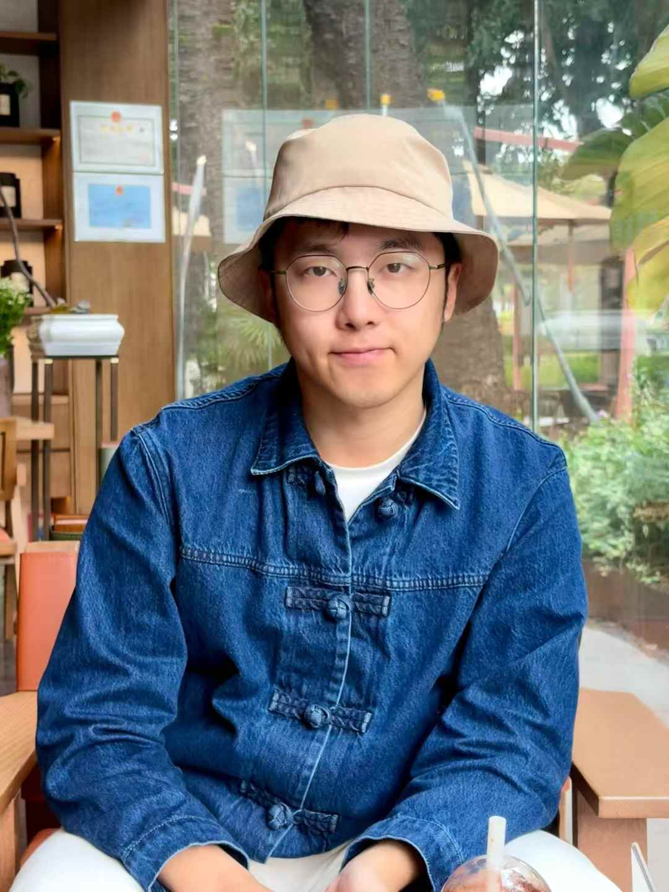
我關注城市空間網絡與政策如何塑造日常生活，並以規劃研究和設計把複雜問題轉化為可行動的策略。
Work experience
Doctoral Exchange (Local Think Tank)
Part-time Urban Planning Assistant
Assist Northern Metropolis reconstruction planning and technical drawing production.
The University of Hong Kong, Department of Urban Planning and Design
Student Research Assistant
Conducted research on Hong Kong public housing networks and the co-benefits of transport policies; two Q1 journal manuscripts under peer review.
Architecture Commons
Architectural Design Intern
Led the “Well-being in Chak On” community renewal plan design, collaborating with HKHA toward implementation.
China Innovation Development Research Institute
Urban Planning Assistant
Conducted Northern Metropolis planning research, site investigations, and concept design development.
China State Construction International Medical Industry Development Co., Ltd
Architectural Engineering Assistant
Organized 4,000+ design drawings for Prince of Wales Hospital Phase II and compiled Kai Tak hospital construction reports.
Shenzhen Branch, China Academy of Urban Planning & Design
Urban Planning Intern
Created industrial planning maps, analyzed building environments, and produced 3D models and CAD drawings for land-use planning.
Spatial analysisPolicy evaluationUrban design
Strategic planningCommunity engagementTechnical drawing
03 · Academic & Professional Guidance
Advisors across planning, policy and urban design.
我的規劃訓練由策略規劃、空間研究、城市設計技術、交通政策與公共政策實務共同塑造。
04 · Project archive
More work across scales.
由濱水公共空間、研究項目到本科城市設計訓練。左右滾動瀏覽，點擊卡片查看完整項目。
05 · Beyond planning
Leadership begins with care.
在重慶大學期間，我創立並擔任 Meow Society — Stray Cat Care Association 會長，組織校園流浪動物照護、救助、領養與倡議工作。這段經驗不只是課外活動，也是我理解社群組織、公共溝通與日常照護倫理的重要起點。
城市規劃不只關乎宏大的空間藍圖，也關乎誰被看見、誰被照顧，以及一個社群如何建立持續行動的能力。
- Peer Impact Network (HKU CEDARS) · Peer supporter
- City Gallery Student Ambassador Scheme · Student ambassador
- HKU DUPAD Student Ambassador · Workshop assistant / tour guide
- Participatory Planning Volunteers · HKIP promotion booth assistant
- Children from Low-income Families Voluntary Teaching Programme · English teacher for ADHD student group
- WuZhiQiao (Bridge to China) Team · Strategy and promotion team member
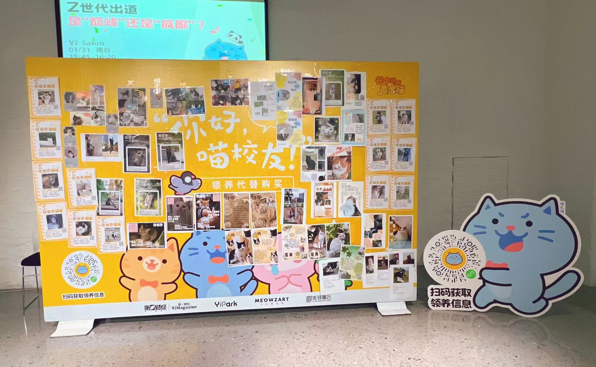
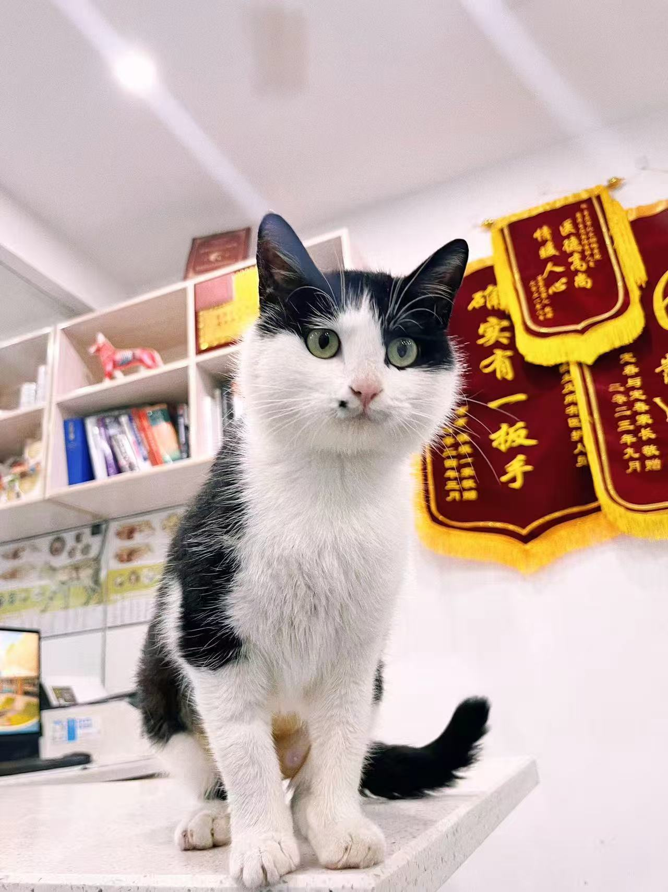
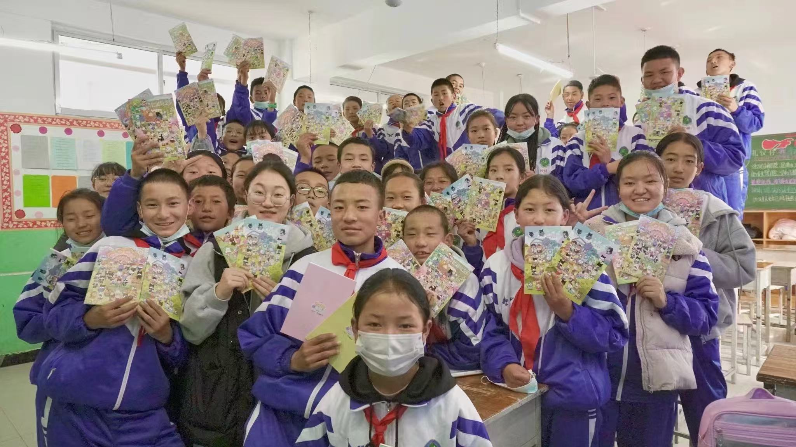
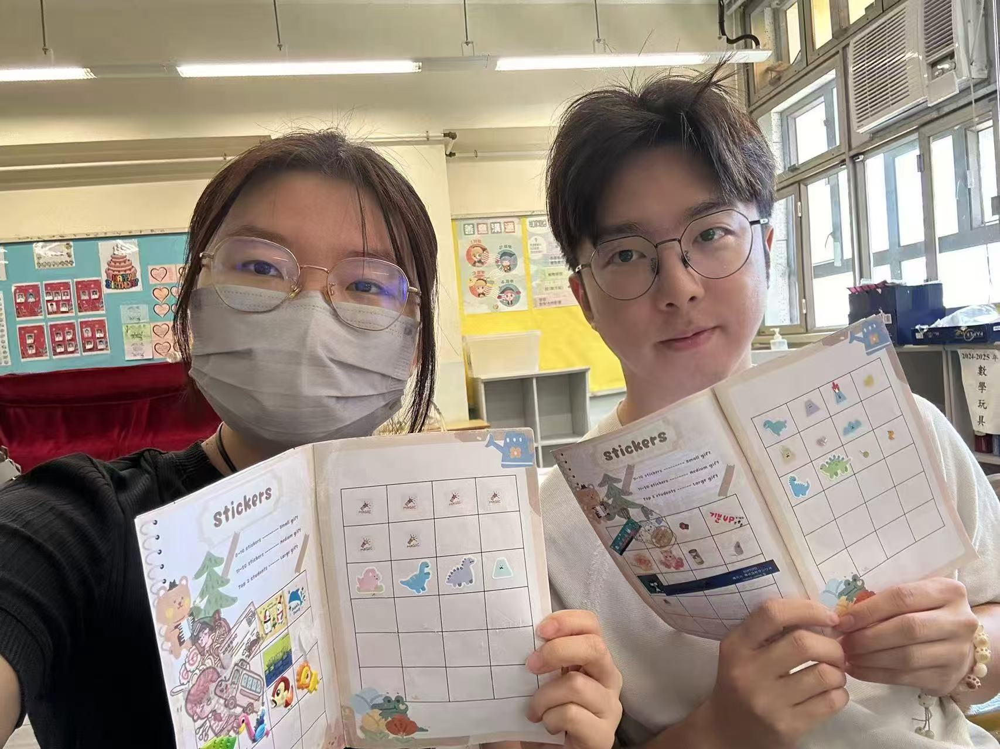
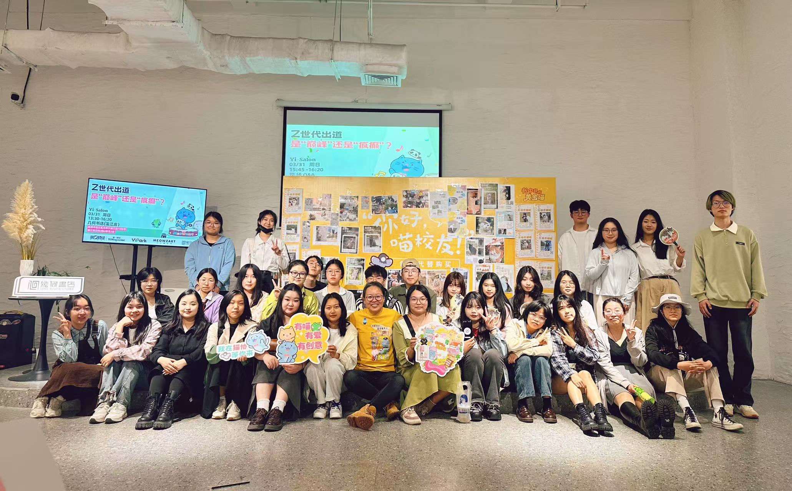
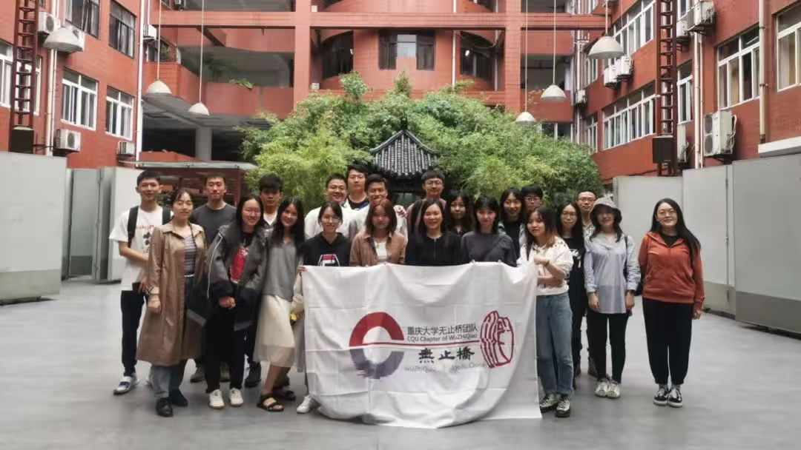
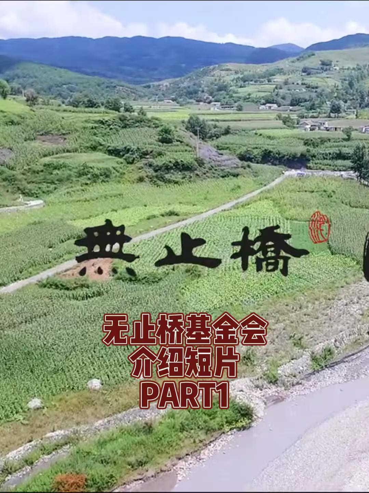
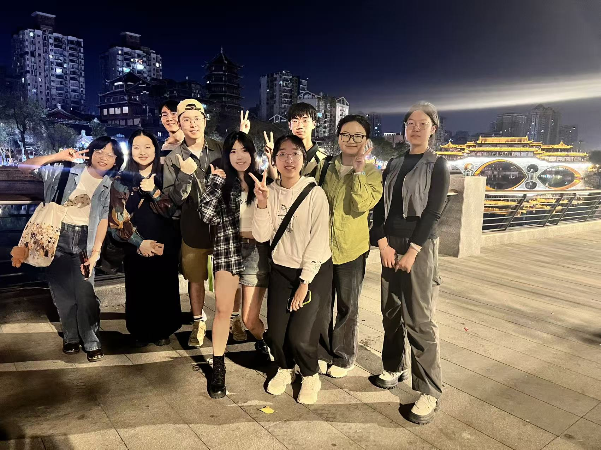
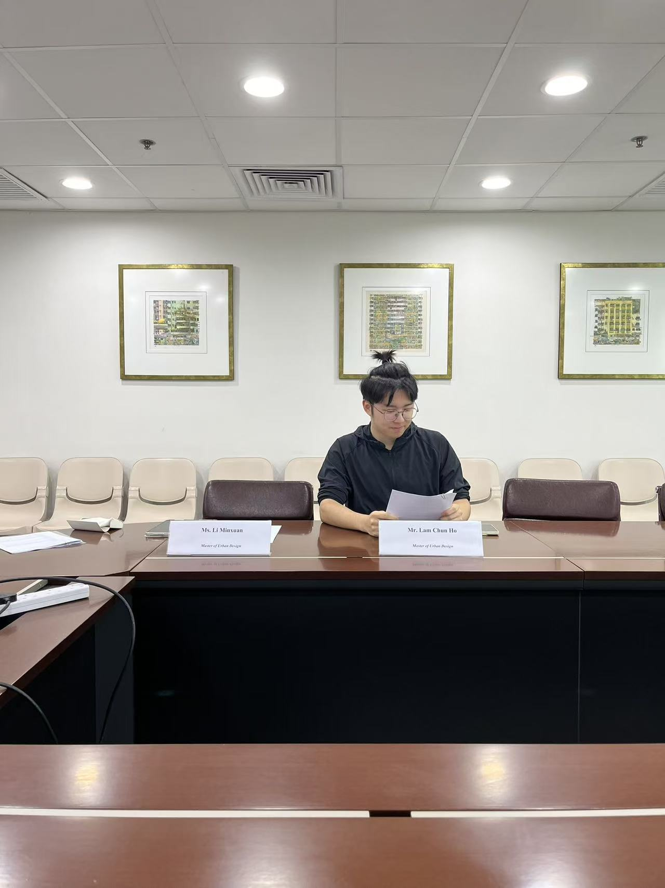
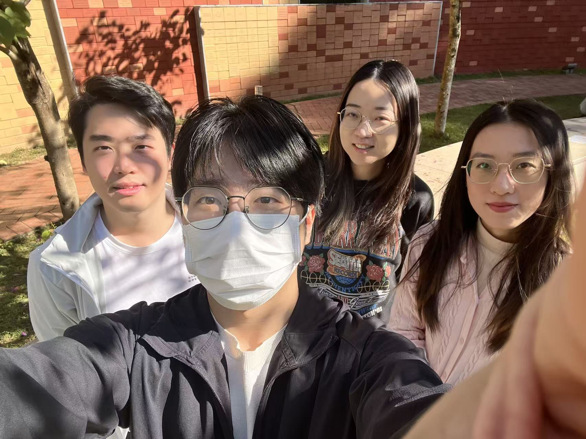
Available for opportunities in Hong Kong
Let’s shape better cities together.
Open to Urban Planner, Urban Designer, Urban Manager, and research opportunities.